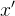
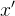
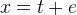
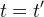
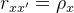

| テスト理論 |
| テスト理論 |
今、2つの観測値 とについて、
とについて、
|  | (32) | ||
| (33) |
であるとする。 ただし、、、である。
このとき、
|  | (34) | ||
| (35) |
であれば、この2つの観測値は強平行測定によるという。
2つの観測値とが強平行測定によるとき、
|  | (36) |
である。
およびであることを利用して、
| (37) | ||||
 |
(38) | |||
|
 |
(39) | ||
|
(40) | |||
|
(41) |
[証明終わり]
| テスト理論 |